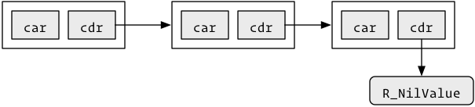
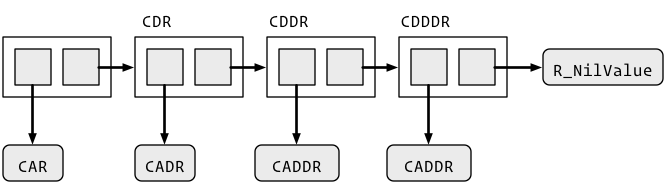

10 Pairlists
Pairlists are linked lists used for calls, unevaluated arguments, attributes, and in ....
The terminology of pairlist comes from LISPs “dotted pairs” which is a way of describing “CONS” cells. A CONS cell is a pair of pointers:
- “CAR” (contents of address register) points to an object
- “CDR” (contents of decrement register) points to the next element in the list. The CDR of the last element is
R_NilValue.
Graphically, this looks like:

To loop over all elements of a pairlist, use this template:
int length(SEXP s) {
int i = 0;
for(SEXP cons = x; cons != R_NilValue; cons = CDR(nxt) {
SEXP el = CAR(cons);
i++;
}
return i;
}10.1 Test
10.1.1 Rf_isPairList() (Rf_isLanguage(), Rf_isList())
Test whether an object is a pairlist, a call, or a pairlist-or-NULL.
Rboolean Rf_isPairList(SEXP x); // LISTSXP
Rboolean Rf_isLanguage(SEXP x); // LANGSXP
Rboolean Rf_isList(SEXP x); // LISTSXP, NILSXPStatus: API · Header: Rinternals.h · Protect: not needed · Errors: never · Since: — · R equivalent: —
10.2 Creation
10.2.1 Rf_cons() (Rf_lcons())
Create a new CONS cell linking two objects.
SEXP Rf_cons(SEXP a, SEXP b); // function arguments
SEXP Rf_lcons(SEXP a, SEXP b); // callsStatus: API · Header: Rinternals.h · Protect: result · Errors: can throw · Since: — · R equivalent: —
The CDR of the final value must be R_NilValue.
See also: Rf_list1(), Rf_lang1()
10.2.2 Rf_list1() (Rf_list2(), Rf_list3(), Rf_list4(), Rf_list5())
Create a pairlist of one to five elements.
SEXP Rf_list1(SEXP x1);
SEXP Rf_list2(SEXP x1, SEXP x2);
SEXP Rf_list3(SEXP x1, SEXP x2, SEXP x3);
SEXP Rf_list4(SEXP x1, SEXP x2, SEXP x3, SEXP x4);
SEXP Rf_list5(SEXP x1, SEXP x2, SEXP x3, SEXP x4, SEXP x5);Status: API · Header: Rinternals.h · Protect: result · Errors: can throw · Since: — · R equivalent: —
These automatically add the terminating R_NilValue.
See also: Rf_cons(), Rf_lang1()
10.2.3 Rf_lang1() (Rf_lang2(), Rf_lang3(), Rf_lang4(), Rf_lang5(), Rf_lang6())
Create a call to a function with zero to five arguments.
SEXP Rf_lang1(SEXP x1);
SEXP Rf_lang2(SEXP x1, SEXP x2);
SEXP Rf_lang3(SEXP x1, SEXP x2, SEXP x3);
SEXP Rf_lang4(SEXP x1, SEXP x2, SEXP x3, SEXP x4);
SEXP Rf_lang5(SEXP x1, SEXP x2, SEXP x3, SEXP x4, SEXP x5);
SEXP Rf_lang6(SEXP x1, SEXP x2, SEXP x3, SEXP x4, SEXP x5, SEXP x6);Status: API · Header: Rinternals.h · Protect: result · Errors: can throw · Since: — · R equivalent: —
These automatically add the terminating R_NilValue.
See also: Rf_cons(), Rf_list1()
10.2.4 Rf_allocFormalsList2() (Rf_allocFormalsList3(), Rf_allocFormalsList4(), Rf_allocFormalsList5(), Rf_allocFormalsList6())
Allocate a formals pairlist of two to six elements.
SEXP Rf_allocFormalsList2(SEXP x1, SEXP x2);
SEXP Rf_allocFormalsList3(SEXP x1, SEXP x2, SEXP x3);
SEXP Rf_allocFormalsList4(SEXP x1, SEXP x2, SEXP x3, SEXP x4);
SEXP Rf_allocFormalsList5(SEXP x1, SEXP x2, SEXP x3, SEXP x4, SEXP x5);
SEXP Rf_allocFormalsList6(SEXP x1, SEXP x2, SEXP x3, SEXP x4, SEXP x5, SEXP x6);Status: API · Header: Rinternals.h · Protect: result · Errors: can throw · Since: — · R equivalent: —
These automatically add the terminating R_NilValue.
10.2.5 Rf_PairToVectorList() (Rf_VectorToPairList())
Convert a pairlist to a list vector, or a list vector to a pairlist.
SEXP Rf_PairToVectorList(SEXP x);
SEXP Rf_VectorToPairList(SEXP x);Status: API · Header: Rinternals.h · Protect: result · Errors: can throw · Since: — · R equivalent: —
10.2.6 Rf_listAppend()
Append one pairlist to another.
SEXP Rf_listAppend(SEXP source, SEXP target);Status: API · Header: Rinternals.h · Protect: result · Errors: can throw · Since: — · R equivalent: —
The CDR of the final value must be R_NilValue.
There are helpers for 5-6 arguments. These automatically add the terminating R_NilValue.
10.3 Accessors
10.3.1 CAR() (CDR(), CAAR(), CDAR(), CADR(), CDDR(), CDDDR(), CADDR(), CADDDR(), CAD4R())
Get the first element or a nested component of a CONS cell.
SEXP CAR(SEXP e);
SEXP CDR(SEXP e);
SEXP CAAR(SEXP e);
SEXP CDAR(SEXP e);
SEXP CADR(SEXP e);
SEXP CDDR(SEXP e);
SEXP CDDDR(SEXP e);
SEXP CADDR(SEXP e);
SEXP CADDDR(SEXP e);
SEXP CAD4R(SEXP e);Status: API · Header: Rinternals.h · Protect: not needed · Errors: never · Since: — · R equivalent: —
Pairlists have no way to index into an arbitrary location; instead these helpers navigate along the linked list. CAR() extracts the first element of the list and CDR() extracts the rest of the list; these can be composed to get CAAR(), CDAR(), CADDR(), CADDDR(), and so on.
10.3.2 SETCAR() (SETCDR(), SETCADR(), SETCADDR(), SETCADDDR(), SETCAD4R())
Set the first element or a nested component of a CONS cell.
SEXP SETCAR(SEXP x, SEXP y);
SEXP SETCDR(SEXP x, SEXP y);
SEXP SETCADR(SEXP x, SEXP y);
SEXP SETCADDR(SEXP x, SEXP y);
SEXP SETCADDDR(SEXP x, SEXP y);
SEXP SETCAD4R(SEXP e, SEXP y);Status: API · Header: Rinternals.h · Protect: not needed · Errors: never · Since: — · R equivalent: —
Corresponding to the getters, R provides setters SETCAR(), SETCDR(), etc.
10.3.3 TAG() (SET_TAG())
Get or set the tag (name) attached to a node of a pairlist.
SEXP TAG(SEXP e);
void SET_TAG(SEXP x, SEXP y);Status: API · Header: Rinternals.h · Protect: not needed · Errors: never · Since: — · R equivalent: —
See also: CAR()
10.3.4 CONS_NR()
Create a CONS cell with no reference counting.
SEXP CONS_NR(SEXP a, SEXP b);Status: non-API (use Rf_cons()) · Header: Rinternals.h · Protect: result · Errors: can throw · Since: — · R equivalent: —
CONS with no-refcounting?
See also: Rf_cons()
10.3.5 MISSING() (SET_MISSING())
Get or set whether an element of a call is missing.
int MISSING(SEXP x);
void SET_MISSING(SEXP x, int v);Status: API · Header: Rinternals.h · Protect: n/a · Errors: never · Since: — · R equivalent: —
Used for missing values in function calls?
Unlike lists (VECSXPs), pairlists (LISTSXPs) have no way to index into an arbitrary location. Instead, R provides a set of helper functions that navigate along a linked list. The basic helpers are CAR(), which extracts the first element of the list, and CDR(), which extracts the rest of the list. These can be composed to get CAAR(), CDAR(), CADDR(), CADDDR(), and so on. Corresponding to the getters, R provides setters SETCAR(), SETCDR(), etc.

10.3.6 Pretending it’s a vector
10.3.7 Rf_allocList()
Create a new pairlist of the specified length.
SEXP Rf_allocList(int n);Status: API · Header: Rinternals.h · Protect: result · Errors: can throw · Since: — · R equivalent: —
Works with a pairlist as if it’s a vector. It’s easy to get O(n^2) behaviour, but for the usual size of pairlists this is unlikely to cause a performance bottleneck. To create a call expression, use Rf_allocLang() (added in R 4.4.1) or Rf_lcons() rather than Rf_allocList() plus SET_TYPEOF(), which will not be available to packages in the future.
See also: Rf_nthcdr(), Rf_lcons()
10.3.8 Rf_nthcdr()
Access the nth element of a pairlist.
SEXP Rf_nthcdr(SEXP x, int n);Status: API · Header: Rinternals.h · Protect: not needed · Errors: never · Since: — · R equivalent: —
Works with a pairlist as if it’s a vector. It’s easy to get O(n^2) behaviour, but for the usual size of pairlists this is unlikely to cause a performance bottleneck.
See also: Rf_allocList(), CDR()
Some functions allow you to work with a pair list as if it’s a vector:
If you use these it’s easy to get O(n^2) behaviour, but for the usual size of pairlists, this is unlikely to cause a performance bottleneck.
10.3.9 Creating a call
Pairlists are most commonly used for function calls. Calls to functions with 0 to 5 arguments can be created directly via Rf_lang1() to Rf_lang6(). However, these functions do not allow for named arguments. If you need named arguments, use the following template:
// equivalent of:
// fun(arg1 = a, arg2 = b, arg3 = c)
SEXP call = PROTECT(Rf_allocVector(LANGSXP, 4)); // 4 = # of args + 1
SETCAR(call, fun);
SEXP s = CDR(call);
SETCAR(s, a);
SET_TAG(s, Rf_install("arg1"));
s = CDR(s);
SETCAR(s, b);
SET_TAG(s, Rf_install("arg2"));
s = CDR(s);
SETCAR(s, c);
SET_TAG(s, Rf_install("arg3"));
SEXP out = PROTECT(Rf_eval(call, env));
...
UNPROTECT(2);10.4 Dots (DOTSXP)
Represents the ... structure in R. Easiest to get to with findVar(R_DotsSymbol, env) or similar. Is usually a pair list, but will have value R_MissingArg if there are no arguments.
10.5 Null (NILSXP)
There is a single value with type NILSXP: R_NilValue. This corresponds to NULL in R, and is often used as generic zero length vector.